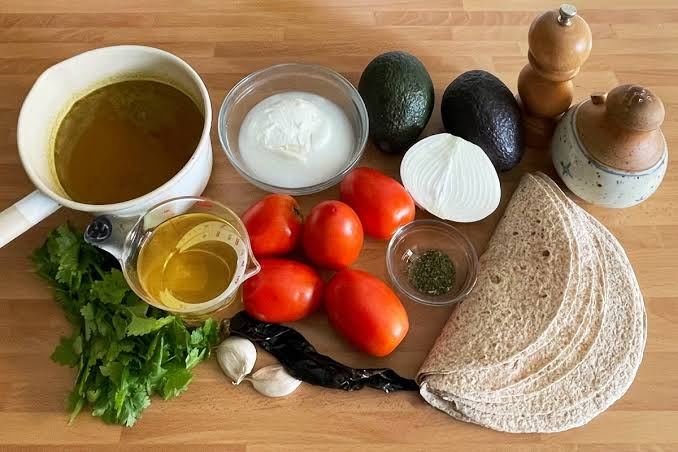

¿Cómo preparar sopa azteca?
Una receta mexicana, calientita y fácil de preparar. Rinde 4 porciones y toma aproximadamente 40 minutos.
Ingredientes
- 8 tortillas de maíz, cortadas en tiras
- 4 jitomates medianos
- 1/4 de cebolla blanca
- 1 diente de ajo
- 1 chile pasilla seco, sin semillas
- 1 litro de caldo de pollo
- 2 cucharadas de aceite vegetal
- Sal al gusto
- 1 rama de epazote (opcional)
Para servir
- 1 aguacate en cubos
- 100 g de queso fresco desmoronado
- Crema al gusto
- Limón y tiras de chile pasilla frito
Preparación
- Calienta el aceite en una sartén y fríe las tiras de tortilla en tandas hasta que estén doradas y crujientes. Escúrrelas sobre papel absorbente.
- Tuesta ligeramente el chile pasilla en la sartén durante unos segundos por lado, cuidando que no se queme. Retíralo y reserva un poco para decorar.
- Licúa los jitomates con la cebolla, el ajo y el chile tostado hasta obtener una salsa uniforme.
- Vierte la salsa en una olla y cocínala a fuego medio durante 8 minutos, moviendo de vez en cuando.
- Agrega el caldo de pollo y el epazote. Sazona con sal y deja hervir suavemente durante 15 minutos.
- Reparte las tiras de tortilla en los platos y sirve encima el caldo caliente. Añade aguacate, queso, crema, limón y chile pasilla al gusto.
